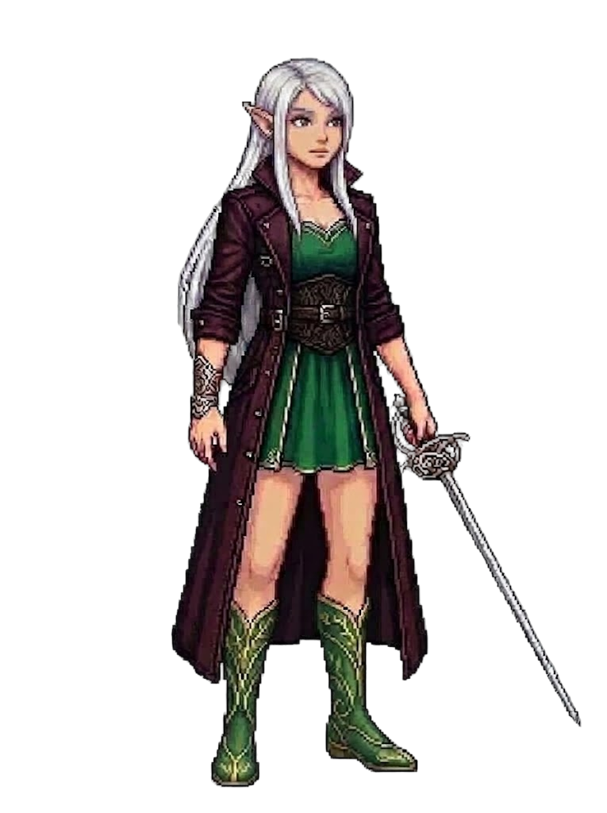

Sylvaine(sprite: Phase 5)
Sylvaine
dmg - (-) ·
spd - ·
crit -
dps - · spell -
evade - · reduc - · heal -
dps - · spell -
evade - · reduc - · heal -
VS
(sprite: Phase 5)
…
Companion
Not yet implemented — planned as a future phase.
Pet
Not yet implemented.